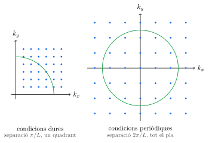
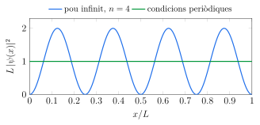
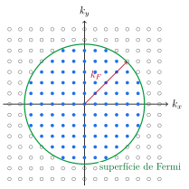
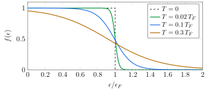
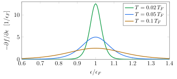
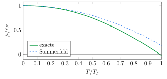
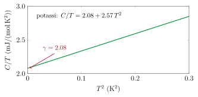
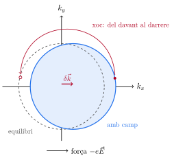
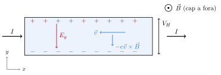

Tema 6Electrons lliures: el gas de Fermi i el transport en els metalls
Apunts en PDF Exercicis del tema
Índex
1 Els electrons de conducció
Fins ara hem estudiat els àtoms d'un cristall: com s'ordenen (Temes 1 i 2), què els manté units (Tema 3) i com vibren (Temes 4 i 5). Aquest tema és el primer dedicat als electrons, i comença per les propietats que fan que un metall sigui un metall: condueix molt bé el corrent elèctric i la calor, i ho fa seguint lleis molt senzilles. La llei d'Ohm diu que el corrent és proporcional al camp elèctric. La llei de Wiedemann i Franz, trobada el 1853, diu que el quocient entre la conductivitat tèrmica i l'elèctrica és pràcticament el mateix per a tots els metalls a la mateixa temperatura.
La primera explicació va arribar el 1900, tres anys després del descobriment de l'electró. P. Drude va aplicar la teoria cinètica dels gasos als electrons d'un metall: un gas de partícules lliures que es mouen entre els ions i hi xoquen de tant en tant. El model explicava la llei d'Ohm i donava el quocient de Wiedemann i Franz amb l'ordre de magnitud correcte. Però tenia un problema greu. Un gas clàssic té una energia de \(\frac32k_BT\) per partícula, i els electrons de conducció haurien d'afegir \(\frac32R\) per mol a la calor específica del metall. Els metalls, però, segueixen la llei de Dulong i Petit del Tema 5 com qualsevol altre sòlid, i aquesta contribució no hi és.
La solució va arribar el 1928, quan A. Sommerfeld va refer el model de Drude amb la mecànica quàntica. Els electrons són fermions, i el principi d'exclusió de Pauli impedeix que n'hi hagi dos al mateix estat: en lloc de la distribució de Maxwell i Boltzmann, s'ha de fer servir la de Fermi i Dirac. Amb aquest sol canvi, la calor específica dels electrons es fa cent vegades més petita, i els encerts de Drude es mantenen. Aquest tema segueix el mateix camí: primer el gas d'electrons en equilibri (seccions 2 a 7), i després el transport, és a dir, la conductivitat elèctrica, l'efecte Hall i la conductivitat tèrmica (seccions 8 a 10).
1.1 Quins electrons són lliures
En un àtom aïllat, els electrons interns estan molt lligats al nucli, i els de valència, els de la capa més externa, molt menys. Quan els àtoms d'un metall s'uneixen per formar el cristall, els electrons de valència es desprenen dels seus àtoms i es poden moure per tot el cristall: són els electrons de conducció. El que queda a cada punt de la xarxa és un ió: el nucli i els electrons interns, que no es mouen del seu lloc. El sodi, per exemple, té la configuració \(1s^2\,2s^2\,2p^6\,3s^1\). En el metall, cada àtom hi aporta un electró de conducció, el \(3s\), i es converteix en un ió Na\(^+\).
Una altra manera de dir com de dens és el gas d'electrons és donar el radi \(r_0\) de l'esfera que, de mitjana, conté un electró, \(\frac43\pi r_0^3=1/n\). Se sol mesurar en unitats del radi de Bohr, \(a_0=0.529\) Å: és el paràmetre adimensional \(r_s=r_0/a_0\), que val entre \(2\) i \(6\) en els metalls (taula de la secció 3). Per al coure, \(r_s=2.67\): cada electró de conducció té per a ell una esfera de \(1.4\) Å de radi.
1.2 Per què un gas lliure
El model d'electrons lliures fa dues simplificacions que, a primera vista, semblen inacceptables. Ignora l'atracció dels ions, que és d'uns quants electronvolts, i ignora la repulsió entre els electrons, que és de la mateixa mida. L'electró de conducció es mou, en aquest model, en una caixa de potencial constant, sense res a dins. Que funcioni tan bé per als metalls alcalins i, en bona part, per a la resta, té tres raons, que veurem amb més detall en temes posteriors.
- El principi d'exclusió obliga els electrons de conducció a ser ortogonals als electrons interns de l'ió, i aquesta condició produeix una repulsió efectiva que compensa gran part de l'atracció del nucli: la força que noten és molt més feble que la del nucli nu.
- Els altres electrons de conducció apantallen la càrrega de cada electró a distàncies de l'ordre de l'angstrom, i el principi d'exclusió limita molt els xocs entre electrons.
- Un potencial perfectament periòdic no dispersa els electrons: és el teorema de Bloch del Tema 7. Els electrons només xoquen amb el que trenca la periodicitat de la xarxa, que són les vibracions dels ions (els fonons del Tema 5) i els defectes.
2 Un electró en una caixa
2.1 Equació de Schrödinger i condicions de contorn periòdiques
Considerem un gas d'electrons lliures contingut en una caixa cúbica de volum \(V=L^3\). Cada electró es descriu amb una funció d'ona \(\psi(\vec r)\) que satisfà l'equació de Schrödinger independent del temps, \[-\frac{\hbar^2}{2m}\nabla^2 \psi(\vec r) = \epsilon\, \psi(\vec r),\] on \(m\) és la massa de l'electró i \(\epsilon\), la seva energia.
És la mateixa condició que vam imposar als modes de vibració al Tema 4. Les solucions són ones planes normalitzades al volum \(V\), \[\psi_{\vec k}(\vec r) = \frac{1}{\sqrt{V}}\, e^{i\vec k\cdot \vec r}.\]
Substituint aquesta funció a l'equació de Schrödinger, amb \(\nabla^2 \psi_{\vec k} = -k^2\, \psi_{\vec k}\), s'obté la relació de dispersió dels electrons lliures: \[\boxed{\epsilon(\vec k) = \frac{\hbar^2 k^2}{2m}} \tag{2}\] L'energia de cada electró és només cinètica, i depèn quadràticament del mòdul del vector d'ona. El moment lineal s'obté aplicant l'operador \(\hat{\vec p}=-i\hbar\nabla\) sobre \(\psi_{\vec k}\): \[\vec p = \hbar \vec k, \qquad \vec v = \frac{\vec p}{m} = \frac{\hbar \vec k}{m}.\]
2.2 Quantització del vector d'ona
Imposant la periodicitat a l'ona plana, \[e^{ik_xL}=1 \quad\Longrightarrow\quad k_x = \frac{2\pi}{L}\,n_x, \qquad n_x\in\mathbb{Z},\] i el mateix per a \(k_y\) i \(k_z\). Així, \[\vec k = \frac{2\pi}{L}(n_x,n_y,n_z),\] és a dir, els valors permesos de \(\vec k\) formen una xarxa cúbica a l'espai \(\vec k\), amb una separació \(2\pi/L\) entre punts consecutius en cada direcció. Cada punt ocupa un volum \((2\pi/L)^3=(2\pi)^3/V\) de l'espai \(\vec k\).
2.3 Condicions de contorn dures i periòdiques
És legítim preguntar-se si l'elecció de les condicions de contorn afecta els resultats físics. Comparem-la amb l'alternativa més intuïtiva: un pou de potencial infinit, amb parets que l'electró no pot travessar.
Amb condicions periòdiques, en canvi, \(k=2\pi n/L\) amb \(n\in\mathbb{Z}\), positius i negatius, i \(|\psi_k(x)|^2=1/L\) és uniforme a tot l'espai. La figura compara els dos casos en dues dimensions. Quan \(k\) és gran, dins d'un cercle de radi \(k\) hi ha el mateix nombre d'estats: amb condicions dures, un quadrant amb punts quatre vegades més densos; amb condicions periòdiques, el cercle sencer.


3 El gas de Fermi a \(T=0\)
3.1 L'esfera de Fermi
Tenim \(N\) electrons i els estats \(\vec k\) permesos. A temperatura zero, el sistema és al seu estat fonamental: els electrons ocupen els estats d'energia més baixa que poden. Si fossin bosons, tots anirien a l'estat \(\vec k=0\). Però són fermions, i el principi d'exclusió de Pauli només permet dos electrons a cada estat \(\vec k\), un amb cada orientació de l'espín. Els electrons van omplint els estats de menys a més energia, és a dir, de menys a més \(|\vec k|\), i a l'espai \(\vec k\) ocupen una esfera.
Cada punt \(\vec k\) ocupa un volum \((2\pi/L)^3\) de l'espai \(\vec k\), de manera que en una esfera de radi \(k_F\) hi caben \[N = 2\times\frac{\frac{4}{3}\pi k_F^3}{(2\pi/L)^3} = \frac{V\,k_F^3}{3\pi^2}\] electrons, on el factor \(2\) és el de l'espín.
La figura mostra el tall \(k_z=0\): cada punt ple té dos electrons, i els buits són estats lliures. En un metall real hi ha uns \(10^{23}\) electrons per centímetre cúbic, i l'esfera és, a tots els efectes, contínua.
3.2 Les escales del gas de Fermi
A partir de \(k_F\) i \(\epsilon_F\) se'n deriven dues escales més.
La taula dona aquests valors per a alguns metalls, calculats amb el model d'electrons lliures a partir de la densitat d'electrons. Tots tenen \(\epsilon_F\) d'uns quants electronvolts, \(v_F\) d'uns \(10^6\) m/s i \(T_F\) de desenes de milers de kelvins.
| Metall | \(z\) | \(n\) | \(r_s\) | \(k_F\) | \(v_F\) | \(\epsilon_F\) | \(T_F\) |
|---|---|---|---|---|---|---|---|
| (\(10^{28}\) m\(^{-3}\)) | (\(10^{10}\) m\(^{-1}\)) | (\(10^{6}\) m/s) | (eV) | (\(10^4\) K) | |||
| Li | 1 | 4.70 | 3.25 | 1.12 | 1.29 | 4.75 | 5.51 |
| Na | 1 | 2.65 | 3.93 | 0.92 | 1.07 | 3.24 | 3.76 |
| K | 1 | 1.40 | 4.86 | 0.75 | 0.86 | 2.12 | 2.46 |
| Cu | 1 | 8.45 | 2.67 | 1.36 | 1.57 | 7.02 | 8.15 |
| Ag | 1 | 5.85 | 3.02 | 1.20 | 1.39 | 5.50 | 6.38 |
| Au | 1 | 5.90 | 3.01 | 1.20 | 1.39 | 5.53 | 6.41 |
| Mg | 2 | 8.60 | 2.66 | 1.37 | 1.58 | 7.10 | 8.24 |
| Zn | 2 | 13.10 | 2.31 | 1.57 | 1.82 | 9.41 | 10.91 |
| Al | 3 | 18.06 | 2.07 | 1.75 | 2.02 | 11.65 | 13.52 |
| Pb | 4 | 13.20 | 2.30 | 1.58 | 1.82 | 9.45 | 10.97 |
Densitats d'electrons de C. Kittel, Introduction to Solid State Physics, taula 6.1 (a temperatura ambient; els alcalins, a \(5\) K, i el liti, a \(78\) K), amb la resta de columnes calculades amb l'equació (3).
L'equació (3) diu que \(\epsilon_F\) creix amb la densitat com \(n^{2/3}\) i és inversament proporcional a la massa de les partícules. Per això el mateix càlcul serveix per a sistemes de fermions molt diferents dels metalls: els electrons d'una estrella nana blanca, molt més densos, o els àtoms d'heli-3 líquid, molt més pesants (exercicis 6.4 i 6.5). A l'altre extrem, en un semiconductor els electrons de conducció són tan pocs que \(\epsilon_F\) es fa més petita que \(k_BT\) (secció 5.3).
4 La densitat d'estats
4.1 Definició i càlcul en tres dimensions
Per calcular magnituds macroscòpiques, com el nombre d'electrons o la seva energia, no cal saber la posició exacta de cada punt \(\vec k\): n'hi ha prou de saber quants n'hi ha a cada interval d'energia. És el mateix pas que vam fer amb els fonons al Tema 5.
El nombre d'estats amb energia menor que \(\epsilon\) és el de l'esfera de radi \(k=\sqrt{2m\epsilon}/\hbar\), \(N(\epsilon)=Vk^3/3\pi^2\). Derivant-lo respecte de l'energia, \[N(\epsilon)=\frac{V}{3\pi^2}\left(\frac{2m\epsilon}{\hbar^2}\right)^{3/2} \quad\Longrightarrow\quad g(\epsilon)=\frac{dN}{d\epsilon} = \frac{V}{2\pi^2} \left(\frac{2m}{\hbar^2}\right)^{3/2}\epsilon^{1/2}. \tag{4}\] La densitat d'estats creix com l'arrel de l'energia: les capes esfèriques de l'espai \(\vec k\) amb el mateix gruix d'energia són més grans com més lluny de l'origen. Comparant \(N(\epsilon)\) amb \(g(\epsilon)\), es veu que \(g(\epsilon)=\frac32N(\epsilon)/\epsilon\), i a l'energia de Fermi, on \(N(\epsilon_F)=N\), \[g(\epsilon_F)=\frac{3N}{2\epsilon_F}. \tag{5}\] Aquesta relació apareixerà sovint, perquè les propietats tèrmiques i de transport depenen dels estats propers a \(\epsilon_F\).
4.2 Una i dues dimensions
En una làmina molt prima o en un fil molt estret, els electrons només es poden moure lliurement en dues dimensions o en una. El recompte és el mateix, però amb un cercle o un segment en lloc d'una esfera. Si \(N(\epsilon)\propto k^d\propto\epsilon^{d/2}\) en \(d\) dimensions, aleshores \(g(\epsilon)\propto\epsilon^{d/2-1}\): en tres dimensions creix com \(\sqrt\epsilon\), en dues és constant (\(g=Am/\pi\hbar^2\) per a una àrea \(A\)) i en una divergeix a baixa energia com \(1/\sqrt\epsilon\). La figura compara les tres per al mateix nombre d'electrons i la mateixa \(\epsilon_F\): l'àrea sota cada corba fins a \(\epsilon_F\) és la mateixa, i \(g(\epsilon_F)=\frac d2N/\epsilon_F\).

4.3 Nombre d'electrons i energia a \(T=0\)
Amb la densitat d'estats, el nombre d'electrons i la seva energia total són integrals: \[N = \int_0^{\epsilon_F} g(\epsilon)\,d\epsilon, \qquad U_0 = \int_0^{\epsilon_F} \epsilon\,g(\epsilon)\,d\epsilon.\] La primera, amb l'equació (4), torna a donar l'energia de Fermi de l'equació (3). La segona dona \[U_0 = \frac{V}{5\pi^2}\left(\frac{2m}{\hbar^2}\right)^{3/2}\epsilon_F^{5/2} \quad\Longrightarrow\quad \frac{U_0}{N} = \frac{3}{5}\,\epsilon_F .\] L'energia mitjana d'un electró és tres cinquenes parts de la de Fermi, i no la meitat, perquè hi ha més estats a prop de \(\epsilon_F\) que a prop de zero. Per al coure són \(4.2\) eV per electró, a temperatura zero.
5 La distribució de Fermi i Dirac
5.1 L'ocupació dels estats
Clàssicament, un gas de partícules lliures es reparteix entre els estats segons la distribució de Maxwell i Boltzmann: la probabilitat que una partícula tingui energia \(\epsilon\) és proporcional a \(e^{-\epsilon/k_BT}\), sense cap límit al nombre de partícules que poden ocupar el mateix estat. És la distribució que va fer servir Drude.
Això obliga a substituir la distribució de Maxwell i Boltzmann per la funció de Fermi i Dirac, \[f(\epsilon) = \frac{1}{e^{(\epsilon-\mu)/k_BT}+1}, \tag{6}\] on \(\mu\) és el potencial químic, l'energia a la qual la probabilitat d'ocupació val exactament \(\frac12\). Com que el denominador és sempre més gran que \(1\), \(f\) mai no supera \(1\): cada estat té, com a molt, un electró. El potencial químic no és un paràmetre lliure: el fixa la condició que el nombre total d'electrons sigui \(N\), \[N = \int_0^\infty g(\epsilon)\,f(\epsilon)\,d\epsilon . \tag{7}\]
Quan \(T\to 0\), \(f\) es converteix en un esglaó, \[\lim_{T\to0}f(\epsilon) = \begin{cases}1 & \epsilon<\epsilon_F\\ 0 & \epsilon>\epsilon_F\end{cases},\] i el potencial químic a \(T=0\) coincideix amb l'energia de Fermi de la secció 3. A temperatura finita, l'esglaó s'arrodoneix en una franja d'amplada d'unes quantes vegades \(k_BT\) al voltant de \(\mu\): alguns electrons de sota \(\mu\) passen a estats de sobre. La figura mostra \(f\) per a diverses temperatures, amb el potencial químic de cada una calculat amb l'equació (7).

Per a un metall a temperatura ambient, \(T\approx0.004\,T_F\): la franja és tan estreta que a l'escala de la figura no es distingiria de l'esglaó. La corba de \(0.02\,T_F\) correspondria al coure a \(1600\) K, per sobre del seu punt de fusió.
5.2 La derivada de la funció de Fermi i Dirac
Moltes propietats dels metalls depenen de quins electrons poden canviar d'estat, i aquests són els de la franja on \(f\) passa d'\(1\) a \(0\). La derivada de \(f\) la fa visible: \[-\frac{\partial f}{\partial \epsilon}=\frac{1}{4k_BT\cosh^2\!\big[(\epsilon-\mu)/2k_BT\big]} .\] És una corba en forma de campana centrada a \(\mu\), d'amplada d'unes quantes vegades \(k_BT\) i d'àrea igual a \(1\). Quan \(T\ll T_F\), es comporta com una delta de Dirac, \[-\frac{\partial f}{\partial \epsilon} \simeq \delta(\epsilon-\mu).\]

5.3 Gas degenerat i gas no degenerat
El comportament del gas d'electrons depèn de com és \(k_BT\) comparada amb \(\epsilon_F\), és a dir, de com és \(T\) comparada amb \(T_F\).
Com que \(T_F\) depèn només de la densitat, la mateixa equació (3) diu quan un gas d'electrons és degenerat. Els electrons d'un metall ho són sempre. Els electrons de conducció d'un semiconductor, que en són molts menys, normalment no ho són.
| Densitat d'electrons | \(\epsilon_F\) | \(T_F\) | a \(300\) K |
|---|---|---|---|
| \(10^{21}\) m\(^{-3}\) (\(10^{15}\) cm\(^{-3}\)) | \(0.036\) meV | \(0.42\) K | no degenerat |
| \(10^{23}\) m\(^{-3}\) (\(10^{17}\) cm\(^{-3}\)) | \(0.79\) meV | \(9.1\) K | no degenerat |
| \(10^{25}\) m\(^{-3}\) (\(10^{19}\) cm\(^{-3}\)) | \(17\) meV | \(196\) K | parcialment degenerat |
| \(8.45\times10^{28}\) m\(^{-3}\) (coure) | \(7.02\) eV | \(81\,500\) K | completament degenerat |
Els dos simuladors del model de Drude d'aquest tema (secció 8) fan servir les dues estadístiques: el clàssic reparteix les velocitats amb la distribució de Maxwell i Boltzmann, i el de Drude i Fermi, amb la de Fermi i Dirac.
6 Temperatura finita: l'expansió de Sommerfeld
A \(T=0\) l'ocupació és un esglaó: els estats fins a \(\epsilon_F\) són plens. A \(T\neq0\), alguns electrons de just per sota de \(\epsilon_F\) pugen a estats de just per sobre, en una franja d'amplada \(\sim k_BT\). Per calcular la calor específica cal saber quanta energia guanya el gas, i per això cal saber també on queda el potencial químic.
La figura ho mostra exagerant la temperatura, \(T=0.2\,T_F\), amb \(\mu\) deixat a \(\epsilon_F\). La corba discontínua és la densitat d'estats, que a \(T=0\) està plena fins a \(\epsilon_F\); la corba contínua és \(g(\epsilon)f(\epsilon)\), el nombre d'electrons per unitat d'energia. La zona verda són els estats que es buiden per sota de \(\epsilon_F\) (el dèficit), i la vermella, els electrons que apareixen per sobre (l'excés). L'excés és un \(29\%\) més gran que el dèficit.

Per calcular-ho calen integrals del tipus \[I = \int_0^\infty H(\epsilon)\,f(\epsilon)\,d\epsilon,\] amb \(H(\epsilon)=g(\epsilon)\) per al nombre d'electrons i \(H(\epsilon)=\epsilon\,g(\epsilon)\) per a l'energia. El desenvolupament complet es fa a l'apèndix A; el resultat, vàlid per a \(T\ll T_F\), és \[\int_0^\infty H(\epsilon)\,f(\epsilon)\,d\epsilon = \int_0^{\epsilon_F} H(\epsilon)\,d\epsilon + (\mu-\epsilon_F)\,H(\epsilon_F) + \frac{\pi^2}{6}(k_BT)^2 H'(\epsilon_F) + \dots \tag{8}\] El primer terme és el valor a \(T=0\); el segon, el que canvia en moure \(\mu\), i el tercer, el que canvia en arrodonir l'esglaó. Les correccions següents són d'ordre \(T^4\).
6.1 El desplaçament del potencial químic
Aplicant l'equació (8) amb \(H=g\), i imposant que \(N\) sigui el mateix que a \(T=0\), \[(\mu-\epsilon_F)\,g(\epsilon_F) + \frac{\pi^2}{6}(k_BT)^2\,g'(\epsilon_F) = 0 \quad\Longrightarrow\quad \boxed{\mu = \epsilon_F - \frac{\pi^2}{6}(k_BT)^2\,\frac{g'(\epsilon_F)}{g(\epsilon_F)}}\] Per als electrons lliures en tres dimensions, \(g\propto\sqrt\epsilon\) i \(g'/g=1/2\epsilon\), i el resultat és \[\mu=\epsilon_F\left[1-\frac{\pi^2}{12}\left(\frac{T}{T_F}\right)^2\right]. \tag{9}\] Per al coure a \(300\) K, \(T/T_F=0.0037\), i el potencial químic baixa \(0.08\) meV, una part en cent mil. La figura compara l'equació (9) amb el potencial químic exacte, calculat resolent numèricament l'equació (7): coincideixen fins a \(T\approx0.2\,T_F\). A \(T\approx T_F\), el potencial químic exacte passa per zero, i per sobre el gas ja és no degenerat.

6.2 La correcció a l'energia
Aplicant el mateix desenvolupament amb \(H(\epsilon)=\epsilon\,g(\epsilon)\), i fent servir el desplaçament de \(\mu\) que acabem de trobar perquè els termes en \(g'(\epsilon_F)\) s'anul·lin, \[\boxed{U = U_0 + \frac{\pi^2}{6}(k_BT)^2\,g(\epsilon_F)} \tag{10}\] L'energia que guanya el gas només depèn de la densitat d'estats a l'energia de Fermi.
7 La calor específica electrònica
7.1 La paradoxa de Drude resolta
La capacitat calorífica dels electrons és la derivada de l'equació (10), i amb \(g(\epsilon_F)=3N/2\epsilon_F\), \[C_{\text{el}}=\frac{\partial U}{\partial T}=\frac{\pi^2}{3}\,g(\epsilon_F)\,k_B^2T=\frac{\pi^2}{2}\,Nk_B\,\frac{T}{T_F}. \tag{11}\] Un gas clàssic tindria \(C=\frac32Nk_B\). El quocient és \(\frac{\pi^2}{3}\,T/T_F\), que per al coure a \(300\) K val \(0.012\). Aquesta és la resposta a la paradoxa de Drude: els electrons de conducció hi són, però gairebé tots estan bloquejats pel principi d'exclusió, i només un de cada cent pot absorbir energia tèrmica.
7.2 Electrons i fonons a baixa temperatura
A temperatura ambient, la calor específica electrònica és una correcció petita. A baixa temperatura, però, la dels fonons cau com \(T^3\) (llei de Debye, Tema 5), i la dels electrons, només com \(T\): per sota d'uns quants kelvins, la dels electrons domina. La calor específica d'un metall a \(T\ll\Theta_D\) i \(T\ll T_F\) és \[C=\gamma T+AT^3,\qquad A=\frac{12\pi^4}{5}\,\frac{R}{\Theta_D^3},\] i les dues contribucions es poden separar dibuixant \(C/T\) en funció de \(T^2\): \[\frac CT=\gamma+AT^2 .\] Els punts han de quedar sobre una recta amb ordenada a l'origen \(\gamma\) i pendent \(A\). Per al coure, \(A=0.0482\) mJ/(mol K\(^4\)) i les dues contribucions són iguals a \(T=\sqrt{\gamma/A}=3.8\) K.

Recta ajustada a les mesures de W. H. Lien i N. E. Phillips per al potassi entre \(0.3\) i \(0.55\) K (Kittel, figura 6.9). El pendent, \(A=2.57\) mJ/(mol K\(^4\)), correspon a \(\Theta_D=91\) K.
7.3 La massa tèrmica efectiva
El coeficient \(\gamma\) és proporcional a \(g(\epsilon_F)\), que per als electrons lliures és proporcional a la massa de l'electró. Quan el \(\gamma\) mesurat no coincideix amb el calculat, es diu que els electrons es comporten com si tinguessin una massa tèrmica efectiva \[\frac{m_{\text{th}}}{m}=\frac{\gamma(\text{mesurat})}{\gamma(\text{lliures})} .\]
| Metall | \(\gamma\) mesurat | \(\gamma\) lliures | \(m_{\text{th}}/m\) | Metall | \(\gamma\) mesurat | \(\gamma\) lliures | \(m_{\text{th}}/m\) |
|---|---|---|---|---|---|---|---|
| Li | 1.63 | 0.745 | 2.19 | Mg | 1.3 | 0.995 | 1.3 |
| Na | 1.38 | 1.091 | 1.27 | Zn | 0.64 | 0.752 | 0.85 |
| K | 2.08 | 1.669 | 1.25 | Al | 1.35 | 0.910 | 1.48 |
| Cu | 0.695 | 0.504 | 1.38 | Pb | 2.98 | 1.496 | 1.99 |
| Ag | 0.646 | 0.643 | 1.00 | Fe | 4.98 | — | — |
| Au | 0.729 | 0.640 | 1.14 | Ni | 7.02 | — | — |
Valors de \(\gamma\) en mJ/(mol K\(^2\)). Mesures de N. Phillips i N. Pearlman, recollides a Kittel, taula 6.2; \(\gamma\) dels electrons lliures, calculat amb les \(T_F\) de la taula de la secció 3.
Els metalls alcalins i els nobles queden a menys d'un \(40\%\) del model, amb l'excepció del liti. Les diferències tenen tres orígens, que el model ignora: el potencial periòdic dels ions, que canvia la relació entre l'energia i el vector d'ona (la massa efectiva de bandes del Tema 7); la interacció dels electrons amb els fonons, que els fa arrossegar una petita deformació de la xarxa i els fa més pesants (al plom, la massa es dobla), i la interacció entre els mateixos electrons. Els metalls de transició, com el ferro i el níquel, tenen \(\gamma\) fins a deu vegades més grans que la del coure: hi contribueixen els electrons de les capes \(d\), que formen bandes estretes amb moltíssims estats a l'energia de Fermi (Tema 7).
8 La conductivitat elèctrica
8.1 La llei d'Ohm i el model de Drude
La llei d'Ohm, en la forma local, diu que la densitat de corrent és proporcional al camp elèctric, \[\vec j=\sigma\vec E,\] on \(\sigma\) és la conductivitat elèctrica, i la seva inversa, \(\rho=1/\sigma\), la resistivitat. A temperatura ambient, la resistivitat dels metalls va d'\(1.6\ \mu\Omega\) cm per a la plata, el millor conductor, a uns \(20\ \mu\Omega\) cm per al plom, i més encara en alguns metalls de transició.
El model de Drude explica d'on surt aquesta proporcionalitat amb una idea molt senzilla. Un camp elèctric accelera tots els electrons en la mateixa direcció, i els xocs els fan perdre, cada temps \(\tau\) de mitjana, la velocitat que han guanyat. Per a la velocitat mitjana \(\vec v\) dels electrons, la velocitat de deriva, l'equació de moviment és \[m\left(\frac{d\vec v}{dt}+\frac{\vec v}{\tau}\right)=-e\vec E . \tag{12}\] El segon terme fa de fregament: si s'apaga el camp, la velocitat de deriva decau exponencialment amb un temps característic \(\tau\), el temps de relaxació. Amb un camp constant, s'arriba a un estat estacionari amb \(d\vec v/dt=0\), és a dir, \(\vec v=-e\tau\vec E/m\). La densitat de corrent és la càrrega que passa per unitat d'àrea i de temps, \(\vec j=-ne\vec v\), i per tant \[\boxed{\sigma=\frac{ne^2\tau}{m}},\qquad \rho=\frac{m}{ne^2\tau} . \tag{13}\] La conductivitat és proporcional al nombre de portadors, al quadrat de la seva càrrega (una vegada per la força que els accelera i una per la càrrega que transporten) i al temps que el camp els pot accelerar sense interrupció.
L'equació (12) també serveix per a camps que oscil·len (exercici 6.6). Mentre \(\omega\tau\ll1\), la conductivitat és la mateixa que amb un camp constant: per al coure, fins a freqüències d'un terahertz, aproximadament, a l'infraroig llunyà. A freqüències molt més altes, els electrons ja no segueixen el camp, i per sobre de la freqüència de plasma, \(\omega_p=\sqrt{ne^2/\epsilon_0m}\), el metall deixa de reflectir la llum i es torna transparent. Per al sodi, amb la densitat d'electrons a temperatura ambient, \(2\pi c/\omega_p=209\) nm, i de fet el sodi és transparent a l'ultraviolat per sota d'uns \(210\) nm.
8.2 L'esfera de Fermi desplaçada
El model de Drude és clàssic. A la imatge quàntica, el camp actua sobre el vector d'ona de cada electró, que canvia segons \[\hbar\frac{d\vec k}{dt}=-e\vec E ,\] la versió quàntica de la segona llei de Newton amb \(\vec p=\hbar\vec k\). Tots els electrons canvien el seu \(\vec k\) de la mateixa manera, i tota l'esfera de Fermi es desplaça. Els xocs la frenen, i en l'estat estacionari queda desplaçada una quantitat \[\delta\vec k=-\frac{e\tau}{\hbar}\vec E=\frac{m\vec v}{\hbar} .\] La velocitat mitjana dels electrons és la del centre de l'esfera, i torna a sortir la conductivitat (13). Però la imatge diu una cosa nova: qui xoca. Un electró de l'interior de l'esfera no pot canviar d'estat, perquè tots els estats propers estan ocupats. Els únics que poden xocar i passar a un altre estat són els de la superfície de Fermi: els xocs agafen electrons del davant de l'esfera desplaçada, on hi ha estats ocupats de més, i els porten al darrere, on n'hi ha de buits.

El desplaçament és ridículament petit: per al fil de l'exemple anterior, \(\delta k=mv/\hbar=0.64\) m\(^{-1}\), davant de \(k_F=1.36\times10^{10}\) m\(^{-1}\). A la figura està exagerat uns sis mil milions de vegades.
8.3 El recorregut lliure mitjà
| Metall | \(\rho\) (\(\mu\Omega\) cm) | \(\tau\) (fs) | \(\ell=v_F\tau\) (nm) | \(\ell\) clàssic (nm) |
|---|---|---|---|---|
| Li | 9.32 | 8.1 | 10.4 | 0.9 |
| Na | 4.75 | 28.3 | 30.2 | 3.3 |
| K | 7.19 | 35.2 | 30.4 | 4.1 |
| Cu | 1.70 | 24.7 | 38.8 | 2.9 |
| Ag | 1.61 | 37.7 | 52.4 | 4.4 |
| Au | 2.20 | 27.4 | 38.2 | 3.2 |
| Al | 2.74 | 7.2 | 14.5 | 0.8 |
| Pb | 21.0 | 1.3 | 2.3 | 0.15 |
Resistivitat a \(295\) K (Kittel, taula 6.3), \(\tau\) de l'equació (13) i \(\ell\) amb la \(v_F\) de la taula de la secció 3. L'última columna fa servir la velocitat tèrmica clàssica, \(\sqrt{3k_BT/m}=1.16\times10^5\) m/s, com faria el model de Drude.
Amb la velocitat de Fermi, el recorregut lliure mitjà del coure a temperatura ambient és de \(39\) nm, uns cent cinquanta espais interatòmics. Drude, amb la velocitat tèrmica, obtenia uns \(3\) nm, una desena de distàncies entre àtoms, i això quadrava amb la seva imatge d'electrons que reboten contra els ions. Però era una coincidència: els electrons no xoquen amb els ions, sinó amb el que trenca la periodicitat de la xarxa. En coure molt pur a \(4\) K, on gairebé no hi ha fonons, \(\tau\approx2\times10^{-9}\) s i \(\ell\approx0.3\) cm: l'electró travessa deu milions de cel·les sense xocar amb res.
8.4 La resistivitat: fonons i impureses
Els electrons xoquen amb dues coses diferents: amb els fonons, que són més nombrosos com més alta és la temperatura, i amb els defectes estàtics (impureses, vacants, fronteres de gra), que no depenen de la temperatura. Si els dos mecanismes són independents, les probabilitats de xoc per unitat de temps se sumen, \[\frac1\tau=\frac1{\tau_L}+\frac1{\tau_i},\] i com que \(\rho\propto1/\tau\), les resistivitats també: \[\rho=\rho_L(T)+\rho_i . \tag{14}\] És la regla de Matthiessen, la mateixa que vam fer servir al Tema 5 per als recorreguts lliures mitjans dels fonons. La part dels fonons, \(\rho_L(T)\), és la mateixa per a totes les mostres d'un metall; la part dels defectes, la resistivitat residual \(\rho_i\), depèn de la puresa de cada mostra, i és el que queda quan \(T\to0\).

Resistivitat del coure amb dues concentracions d'impureses, amb la part dels fonons calculada amb el model de Bloch i Grüneisen (\(\Theta_R=343\) K, \(\rho_L(295\ \text{K})=1.70\ \mu\Omega\) cm). Les dues corbes són paral·leles: la regla de Matthiessen.
La part dels fonons és proporcional a \(T\) a temperatures altes, perquè el nombre de fonons ho és (Tema 5), i cau molt de pressa per sota de \(\Theta_D/5\), aproximadament com \(T^5\). Al coure, a \(77\) K (nitrogen líquid) ja és nou vegades més petita que a temperatura ambient. El quocient \(\rho(300\ \text{K})/\rho_i\), la raó de resistivitat residual, mesura la puresa d'una mostra: cada \(1\%\) atòmic d'impureses afegeix, aproximadament, \(1\ \mu\Omega\) cm de resistivitat. Una mostra de coure amb una raó de \(1000\) té \(\rho_i=1.7\times10^{-3}\ \mu\Omega\) cm, que correspon a unes vint parts per milió d'impureses.
9 L'efecte Hall
9.1 Electrons en un camp magnètic
Un camp magnètic exerceix sobre un electró la força de Lorentz \(-e\vec v\times\vec B\), perpendicular a la seva velocitat. Un electró lliure en un camp \(\vec B\) gira en cercles amb la freqüència de ciclotró \[\omega_c=\frac{eB}{m},\] que per a \(B=1\) T val \(1.76\times10^{11}\) rad/s (\(28\) GHz). En un metall, però, els xocs interrompen aquest gir: al coure a temperatura ambient, \(\omega_c\tau=0.004\), i l'electró recorre només una petita part de l'òrbita entre dos xocs. Només en metalls molt purs i a molt baixa temperatura, \(\omega_c\tau\gg1\) (al coure pur a \(4\) K, \(\omega_c\tau\approx350\) a \(1\) T), i els electrons fan òrbites senceres.
Amb camp magnètic, l'equació de Drude (12) té un terme més: \[m\left(\frac{d\vec v}{dt}+\frac{\vec v}{\tau}\right)=-e\left(\vec E+\vec v\times\vec B\right) . \tag{15}\]
9.2 El camp de Hall
Considerem una barra llarga per on circula un corrent \(\vec j=j_x\hat x\), en un camp magnètic \(\vec B=B\hat z\). Els electrons es mouen en sentit contrari al corrent, \(v_x=-j_x/ne<0\), i la força magnètica, \(-e\vec v\times\vec B=ev_xB\,\hat y\), els empeny cap a la cara \(-y\) de la barra. S'hi acumulen, i a la cara oposada queda un excés de càrrega positiva. Aquesta separació de càrrega crea un camp elèctric transversal \(E_y\), el camp de Hall, que creix fins que la força que fa sobre els electrons compensa la magnètica. A partir d'aquí, els electrons ja no es desvien.

En l'estat estacionari, \(v_y=0\), i la component \(y\) de l'equació (15) dona \(0=-e(E_y-v_xB)\), és a dir, \(E_y=v_xB=-j_xB/ne\). El camp de Hall és proporcional al corrent i al camp magnètic, i el quocient defineix el coeficient de Hall: \[R_H=\frac{E_y}{j_xB}=-\frac{1}{ne} . \tag{16}\] El resultat no depèn de \(\tau\) ni de la massa: només de la densitat de portadors i del signe de la seva càrrega. Per això l'efecte Hall és la manera habitual de mesurar quants portadors té un material, i de quin signe són.
Al model de Drude, el camp magnètic no canvia la resistència en la direcció del corrent: tot el seu efecte és el camp transversal. Tot el que fa el camp \(\vec B\) es pot escriure com un tensor de conductivitat que relaciona \(j_x\) i \(j_y\) amb \(E_x\) i \(E_y\) (exercicis 6.7 i 6.9).
9.3 Què mesura el coeficient de Hall
La taula compara els coeficients de Hall mesurats amb el valor de l'equació (16), calculat suposant que cada àtom aporta \(z\) electrons.
| Metall | \(z\) | \(R_H\) mesurat (\(10^{-11}\) m\(^3\)/C) | \(-1/ne\) (\(10^{-11}\) m\(^3\)/C) |
|---|---|---|---|
| Na | 1 | \(-23.6\) | \(-23.6\) |
| K | 1 | \(-44.5\) | \(-44.6\) |
| Li | 1 | \(-17.0\) | \(-13.3\) |
| Cu | 1 | \(-5.4\) | \(-7.4\) |
| Ag | 1 | \(-9.0\) | \(-10.7\) |
| Au | 1 | \(-7.2\) | \(-10.6\) |
| Mg | 2 | \(-8.3\) | \(-7.3\) |
| Be | 2 | \(+24.3\) | \(-2.6\) |
| Al | 3 | \(+10.2\) | \(-3.5\) |
| Bi | 5 | \(-54\,000\) | — |
Mesures recollides a Kittel, taula 6.4, convertides al SI.
Per al sodi i el potassi, l'acord és perfecte: hi ha exactament un electró de conducció per àtom. Per als metalls nobles, l'ordre de magnitud i el signe són correctes. Però el beril·li i l'alumini tenen un coeficient de Hall positiu: el corrent el porten portadors de càrrega positiva. A l'alumini, el valor mesurat correspon pràcticament a un portador positiu per àtom. I el bismut, un semimetall, té un coeficient mil vegades més gran que qualsevol altre metall: hi ha molt pocs portadors.
10 La conductivitat tèrmica dels metalls
Els metalls condueixen la calor molt millor que la majoria d'aïllants: a temperatura ambient, \(401\) W/(m K) el coure i \(237\) l'alumini, davant d'\(1.4\) el vidre. Al Tema 5 vam veure que en un aïllant la calor la porten els fonons, amb una conductivitat donada per la teoria cinètica, \[K=\frac13\,C\,v\,\ell ,\] on \(C\) és la capacitat calorífica per unitat de volum, \(v\) la velocitat dels portadors i \(\ell\) el seu recorregut lliure mitjà. En un metall, els electrons de conducció també porten calor, i la mateixa fórmula s'hi aplica amb els valors dels electrons: la calor específica electrònica, la velocitat de Fermi i \(\ell=v_F\tau\).
10.1 La llei de Wiedemann i Franz
Amb \(C_{\text{el}}=\frac{\pi^2}{2}nk_BT/T_F=\pi^2nk_B^2T/mv_F^2\) (perquè \(k_BT_F=\frac12mv_F^2\)) i \(\ell=v_F\tau\), la conductivitat tèrmica electrònica és \[K_{\text{el}}=\frac13\,C_{\text{el}}\,v_F^2\,\tau=\frac{\pi^2}{3}\,\frac{nk_B^2T\tau}{m} .\] La conductivitat elèctrica és \(\sigma=ne^2\tau/m\). Les dues són proporcionals a \(n\tau/m\), i el quocient no depèn ni de la densitat d'electrons, ni de la massa, ni del temps de relaxació: \[\frac{K_{\text{el}}}{\sigma T}=L=\frac{\pi^2}{3}\left(\frac{k_B}{e}\right)^2=2.44\times10^{-8}\ \text{W}\,\Omega/\text{K}^2 . \tag{17}\] És la llei de Wiedemann i Franz, i \(L\) és el nombre de Lorenz. Els valors mesurats són molt a prop d'aquest:
| Metall | \(0\,{}^\circ\)C | \(100\,{}^\circ\)C | Metall | \(0\,{}^\circ\)C | \(100\,{}^\circ\)C |
|---|---|---|---|---|---|
| Ag | 2.31 | 2.37 | Pb | 2.47 | 2.56 |
| Au | 2.35 | 2.40 | Pt | 2.51 | 2.60 |
| Cu | 2.23 | 2.33 | Zn | 2.31 | 2.33 |
Nombres de Lorenz mesurats, en \(10^{-8}\) W \(\Omega\)/K\(^2\) (Kittel, taula 6.5).
La llei funciona bé a temperatura ambient, on els xocs amb els fonons canvien molt la direcció de l'electró, i a molt baixa temperatura, on dominen els xocs amb impureses. A temperatures intermèdies, de l'ordre de \(\Theta_D/10\), els fonons tenen un moment petit i desvien poc els electrons, i per això gairebé no relaxen el corrent elèctric; però els canvien l'energia en \(\sim k_BT\), com l'amplada de la franja tèrmica, i passen electrons del costat calent al fred de la franja. Aquests xocs frenen molt més el corrent de calor que l'elèctric, i \(L\) baixa per sota de \(2.44\times10^{-8}\). La derivació rigorosa de les dues conductivitats amb l'equació de transport de Boltzmann és a l'apèndix B.
A L'expansió de Sommerfeld
Aquest apèndix dedueix, pas a pas, el resultat general emprat a la secció 6 per a integrals del tipus \[I = \int_{-\infty}^{\infty} H(\epsilon)\,f(\epsilon)\,d\epsilon, \qquad f(\epsilon)=\frac{1}{e^{(\epsilon-\mu)/k_BT}+1},\] on \(H(\epsilon)\) és una funció que s'anul·la per a \(\epsilon<0\) (com la densitat d'estats) i no creix massa de pressa.
B Les conductivitats amb l'equació de Boltzmann
El model de Drude i la teoria cinètica donen \(\sigma\) i \(K\) amb arguments de mitjanes. Aquest apèndix les dedueix amb l'equació de transport de Boltzmann, que descriu com canvia la distribució dels electrons quan hi ha camps i gradients, i mostra d'on surt exactament el nombre de Lorenz.
Els corrents d'electrons i de calor són les sumes sobre tots els estats, amb dos estats per cada volum \((2\pi)^3/V\) de l'espai \(\vec k\): \[\vec j=-e\int\frac{2\,d^3k}{(2\pi)^3}\,\vec v\,\delta f, \qquad \vec j_Q=\int\frac{2\,d^3k}{(2\pi)^3}\,(\epsilon-\mu)\,\vec v\,\delta f .\] Per fer-les, es passa a una integral sobre l'energia amb la densitat d'estats per unitat de volum, \(g(\epsilon)/V\), i es fa la mitjana sobre les direccions de \(\vec v\), \(\langle v_iv_j\rangle=\frac13v^2\delta_{ij}\).
Dividint les dues conductivitats, \(\tau\), \(n\) i \(m\) desapareixen, i queda la llei de Wiedemann i Franz, equació (17): \[\frac{K}{\sigma T}=\frac{\pi^2}{3}\left(\frac{k_B}{e}\right)^2 .\] El nombre \(\pi^2/3\) és exactament el segon moment de \(-\partial f_0/\partial\epsilon\): la llei de Wiedemann i Franz és una propietat de la distribució de Fermi i Dirac.